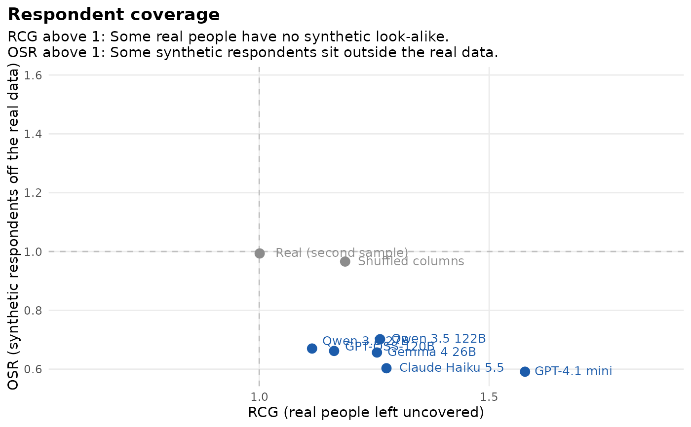

Experimental. respondent_coverage() compares whole answer profiles.
Overlap and Structure in authenticity_benchmark() look at scale scores
and item pairs, so a model can match both while its respondents give
combinations of answers that no real person gives, or crowd around a few
kinds of people. Following Kumagae and Kaneko (2026), each respondent is
a point (the keyed answers to all items) and two ratios use the
distance to the nearest neighbour:
Usage
respondent_coverage(
synthetic,
real,
items,
clean_real = FALSE,
careless_rule = NULL,
n_draws = 5,
tol = 0.1,
seed = 1
)Arguments
- synthetic
a named list with one element per model, each a list of attempts (data frames of responses), as in
synthetic_coverage().- real
a data frame of real responses to the same items.
- items
a data frame with one row per item:
item(column name),scale(ortrait, as in hexaco_items), an optionalfacetand an optional logicalreverse.- clean_real
compare against real respondents after removing those flagged by
flag_careless()? The default compares against all real respondents.- careless_rule
optional
rulepassed toflag_careless().- n_draws
number of real samples per attempt.
- tol
tolerance for
pattern(see Details).- seed
random seed.
Value
An object of class sc_respondent: A list with summary (one row
per model: rcg, osr, their lowest and highest values over attempts,
and pattern), attempts (one row per attempt), reference and
settings. It has print(), tidy() and autoplot() methods.
Details
RCG (respondent coverage gap): The 95th percentile, over real people, of the distance from a real person to the nearest synthetic respondent, divided by the same percentile of the distance from a real person to the nearest other real person. Above 1 means some real people have no synthetic look-alike.
OSR (off-support ratio): The 95th percentile, over synthetic respondents, of the distance to the nearest real person, divided by the same real-to-real percentile. Above 1 means some synthetic respondents sit outside the real data.
Both are near 1 for a second sample of real people. Their combination
gives the pattern of each model: "Human-like" (RCG at most
1 + tol), "Off-support" (RCG and OSR above 1 + tol: Synthetic
respondents lie away from real ones) and "Contraction" (RCG above
1 + tol, OSR not: Synthetic respondents stay close to some real people
and leave the others uncovered).
Samples. Nearest-neighbour distances shrink as a sample grows, so
each synthetic attempt is compared with a random sample of real people of
the same size (n_draws samples, averaged). Distances are Euclidean on
the keyed answers. A missing answer is replaced by the real item mean.
Reference. reference holds the same ratios for a second sample of
real people (near 1) and for shuffled real columns (each item drawn
independently, as the floor of authenticity_benchmark()), both of the
median attempt size.
This is a diagnostic. It is not part of the benchmark score.
References
Kumagae, Y., & Kaneko, M. (2026). Silicon samples match the answers but not the respondents. arXiv:2610.30900.
Examples
real <- hexaco_real[hexaco_real$country == "Canada", ]
ca <- hexaco_llm[hexaco_llm$country == "Canada" & hexaco_llm$attempt <= 2, ]
syn <- lapply(split(ca, ca$model, drop = TRUE), function(m) split(m, m$attempt))
rc <- respondent_coverage(syn, real, hexaco_items, n_draws = 2)
rc
#> Respondent coverage (experimental)
#> 240 items, 1708 real respondents, 2 real samples per attempt.
#>
#> model RCG OSR pattern
#> Qwen 3.8 27B 1.08 0.74 Human-like
#> GPT-OSS-120B 1.11 0.67 Contraction
#> Claude Haiku 5.5 1.12 0.60 Contraction
#> Gemma 4 26B 1.14 0.61 Contraction
#> Qwen 3.5 122B 1.19 0.71 Contraction
#> GPT-4.1 mini 1.27 0.63 Contraction
#> Real (second sample) 1.00 1.00 Human-like
#> Shuffled columns 1.22 0.95 Contraction
#>
#> Both ratios are near 1 for a second sample of real people.
gg_respondent_coverage(rc)
